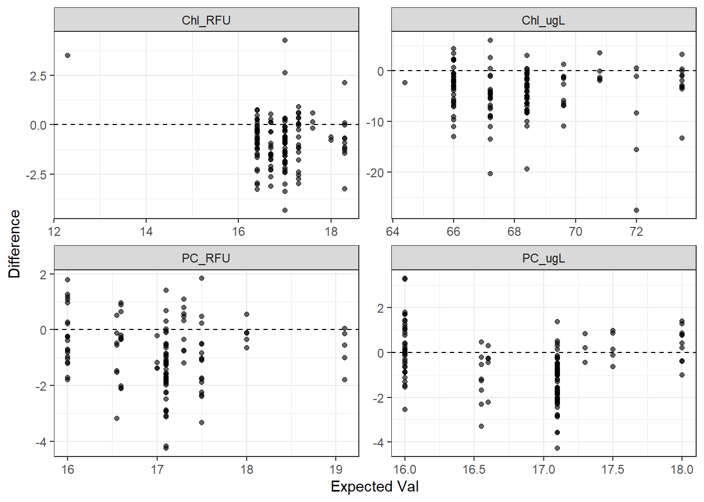
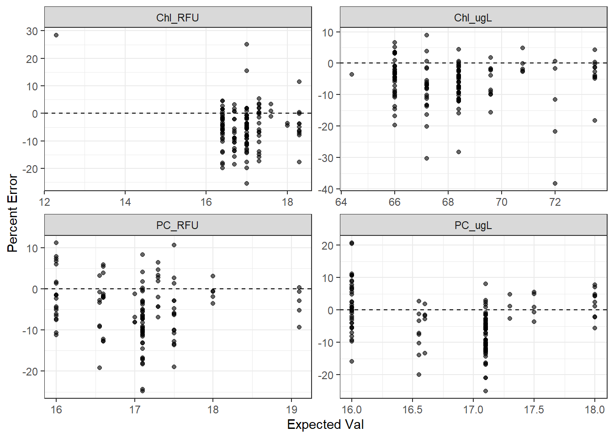
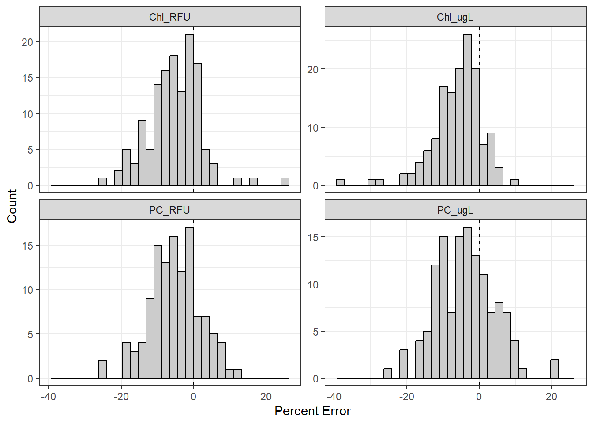
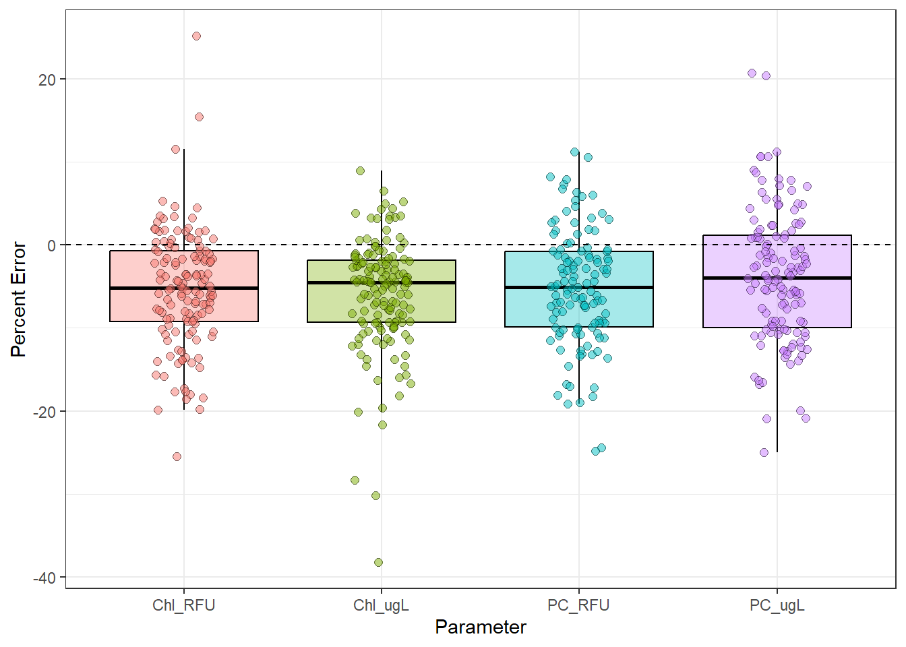
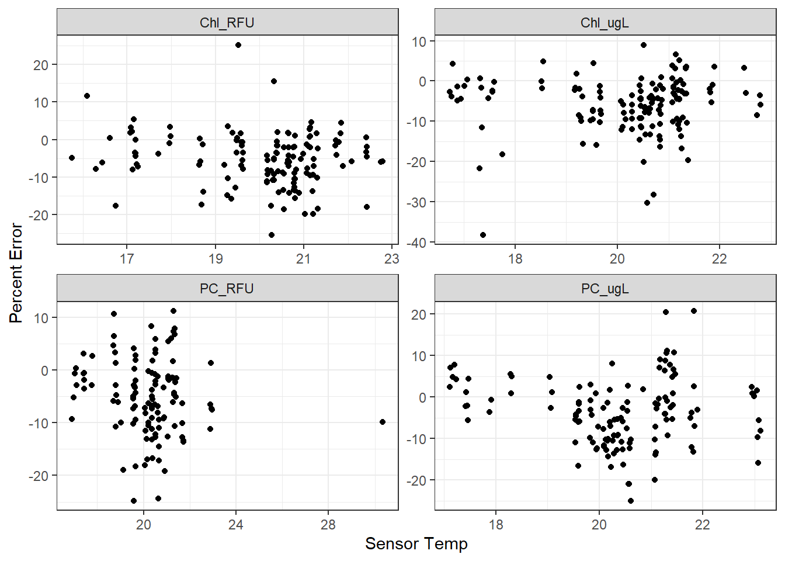
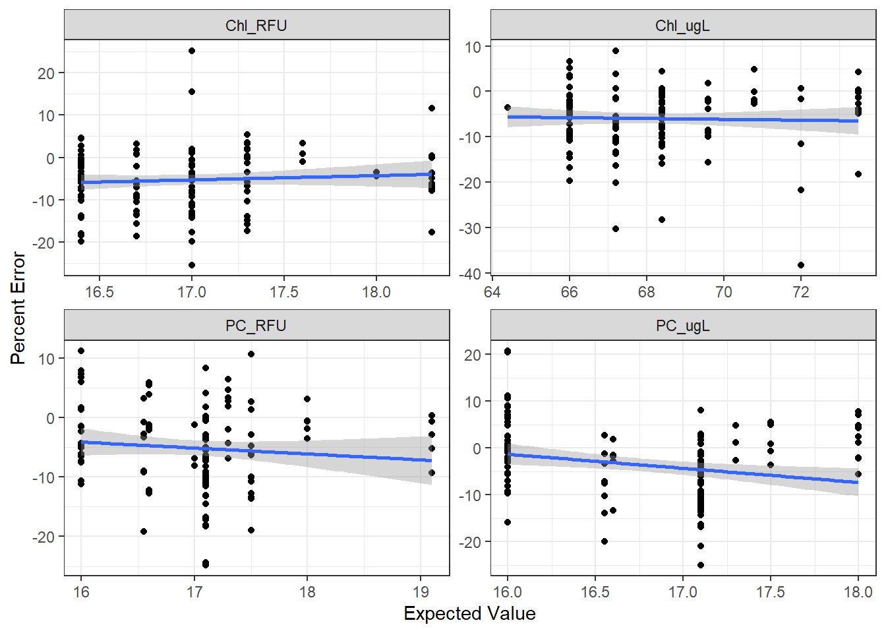
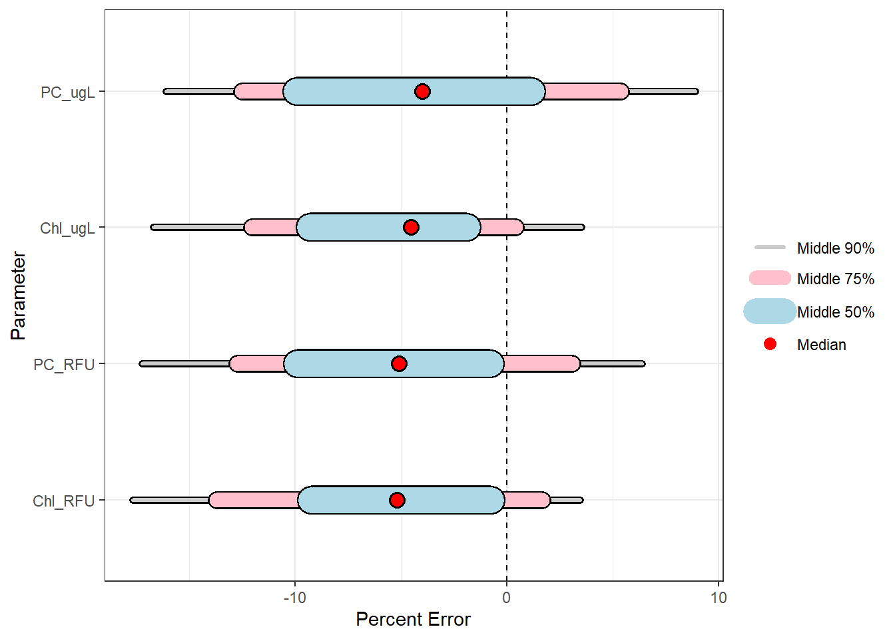
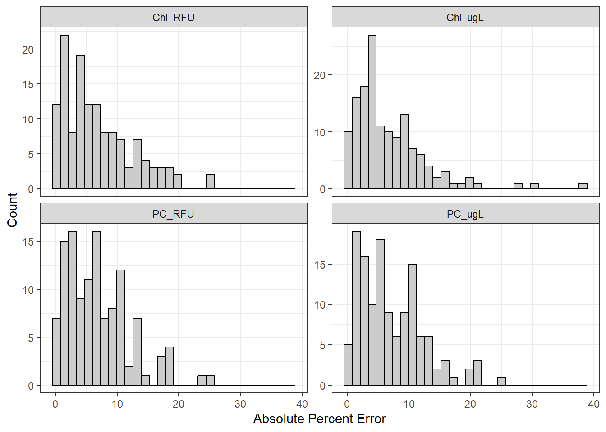
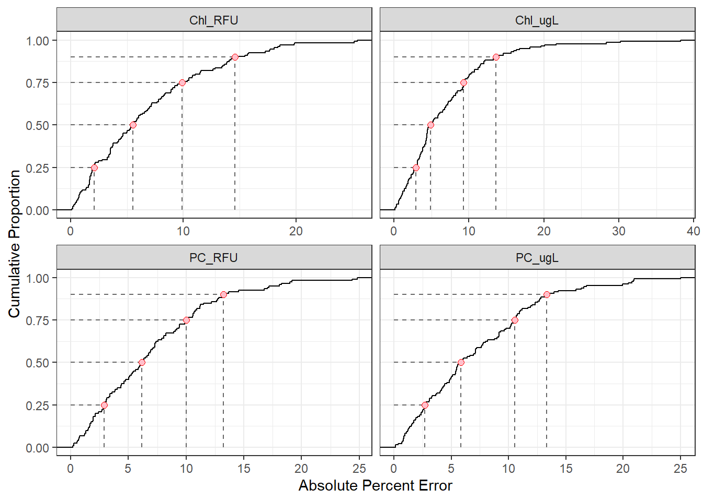

TAL 2-Point Calibration Exploration
Assumptions
- 2-point calibration calibrates 0 and a standard value which (per parameter) varies slightly
- first point corrects intercept, the second the slope
- calibrations are sequential; the first point is fully calibrated, then the second point is
- primary question: what’s the slope drift (error) and is it ‘significant’?
- ie. the error around the second calibration point
- null: post deployment pre-cal values = expected values, magnitude of the errors is ‘small’
Best Error Metric
We can define error in two ways: raw difference (\(precal - expected\)) or percent error (\(\frac{precal - expected}{expected}\)). Since the expected value is not always the same, even within parameters, the difference may matter. We graph to see if it does.

Conclusion
Per parameter, the expected values are are fairly similar. Therefore, there’s little difference between using raw difference or percent error. For ease of comparability between parameters, we’ll use percent error.
We do note, however, that there is one outlier in Chl_RFU with respect to the expected value. We remove it going forward for ease of analysis.
Plots
All Data
We plot all data to note general trends and outliers.


Conclusions
We note that there are a few outliers, particularly for Chl, but nothing extreme. The typical value for all four parameters appears to be below 0, meaning that, on average, the sonde’s pre-cal value is below what’s expected. Additionally, the Chl parameters, in particular, appear negatively skewed.
Temperature
Since fluorescence is inversely related to temperature, we graph the % error and temperature to see if there’s any relationship.

Conclusions
No parameter seems to have a relationship with temp, which is good. We won’t account for temp in this analysis.
Sensor IDs
We check if we can look at differences between individual sensors.
| Parameter | n_points | n_sensors | n_rep |
|---|---|---|---|
| Chl_RFU | 135 | 112 | 1.21 |
| Chl_ugL | 144 | 121 | 1.19 |
| PC_RFU | 120 | 103 | 1.17 |
| PC_ugL | 131 | 111 | 1.18 |
Conclusions
Since there’s only ~1 data point per sensor per parameter, we cannot.
Expected Value
Though the error metric graphs already suggest that the magnitude of the expected value doesn’t influence the expected percent error or the variance around it, we graph to check.

Conclusions
We confirm that percent error and and its variance do not seem to be influenced by the expected value.
Mean Value
We can use a linear model (t-test) to answer ‘does the average percent error differ from zero, and what is it?’
| Parameter | n | sigma | Estimate | Std. Error | t value | Pr(>|t|) |
|---|---|---|---|---|---|---|
| Chl_RFU | 135 | 7.072992 | -5.299185 | 0.6087463 | -8.705080 | 0e+00 |
| Chl_ugL | 144 | 6.841437 | -5.934375 | 0.5701197 | -10.408998 | 0e+00 |
| PC_RFU | 120 | 7.026014 | -5.146083 | 0.6413844 | -8.023399 | 0e+00 |
| PC_ugL | 131 | 8.026397 | -3.773359 | 0.7012695 | -5.380754 | 3e-07 |
Conclusions
For all four parameters, the mean percent error is significantly different from zero. Additionally, for all four, the mean percent error is about -5% with a standard deviation of ~7%. This means, on average, the pre-cal values are 5% less than they should be.
Note that model checks were performed but are not shown to reduce clutter.
Data Variance
We’re interested not only in the mean difference from the expected value, but the variance around it.
Signed Variance
First we look at the signed variance.

| Parameter | n | mean | sd | median | q05 | q12.5 | q25 | q75 | q87.5 | q95 |
|---|---|---|---|---|---|---|---|---|---|---|
| Chl_RFU | 135 | -5.30 | 7.07 | -5.18 | -17.66 | -13.70 | -9.24 | -0.74 | 1.66 | 3.45 |
| Chl_ugL | 144 | -5.93 | 6.84 | -4.52 | -16.67 | -12.04 | -9.29 | -1.88 | 0.41 | 3.52 |
| PC_RFU | 120 | -5.15 | 7.03 | -5.08 | -17.23 | -12.72 | -9.89 | -0.78 | 3.07 | 6.38 |
| PC_ugL | 131 | -3.77 | 8.03 | -4.00 | -16.09 | -12.51 | -9.95 | 1.16 | 5.37 | 8.88 |
Conclusions
For all parameters, ~50% of the data is between (9,0) percent less than the expected value. All parameters appear negatively skewed.
Absolute Variance
We’re also interested, in absolute terms, what the percent errors for the data are.


| Parameter | q25 | q50 | q75 | q90 |
|---|---|---|---|---|
| Chl_RFU | 2.09 | 5.53 | 9.88 | 14.60 |
| Chl_ugL | 2.92 | 4.92 | 9.29 | 13.61 |
| PC_RFU | 2.90 | 6.18 | 10.03 | 13.24 |
| PC_ugL | 2.70 | 5.85 | 10.53 | 13.31 |
Across parameters, 25% of observations had absolute percent error within ~2% of the expected value. The median absolute percent error was ~5.5%, meaning half the observations had an absolute error greater than/less than that. 75% of observations were within ~10% and 90% were within ~14%, meaning 10% of the data had absolute errors greater than 14%.
For reference, for each parameter, these error percentages would convert to:
| Parameter | mean | five_pct | ten_pct | fifteen_pct |
|---|---|---|---|---|
| Chl_RFU | 16.97 | 0.85 | 1.70 | 2.55 |
| Chl_ugL | 68.19 | 3.41 | 6.82 | 10.23 |
| PC_RFU | 17.02 | 0.85 | 1.70 | 2.55 |
| PC_ugL | 16.83 | 0.84 | 1.68 | 2.52 |
Overall Conclusions
If the 2-point calibration wasn’t needed, we’d assume the percent error of the upper calibration point would be, on average, ~0, and that most data would have an error percentage close to that value. We found that the pre-cal values were systematically biased downward, and that 90% of the data are within ~14% absolute error from the standard value. How severe this result is is dependent on what the tolerable level of error is for each parameter, though the clear bias across all parameters should definitely be noted.